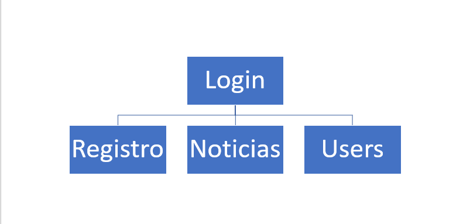
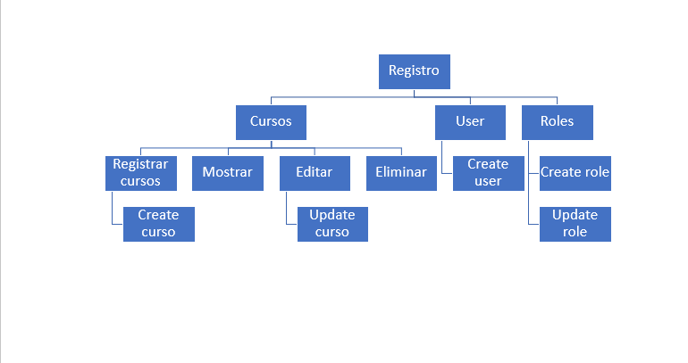
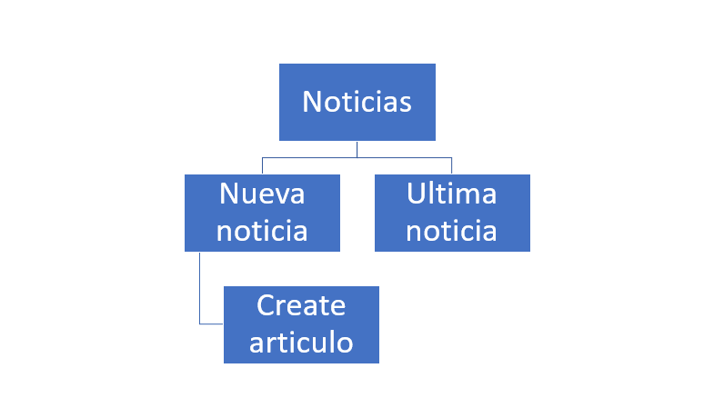
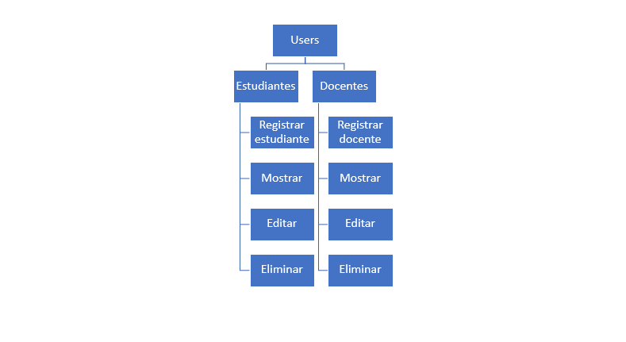

Introducción
Para trabajar este tema, es fundamental tomar como referente el término Manual, donde la Real Academia de la Lengua lo define, Manual, Libro en que se compendia lo más sustancial de una materia., aunque nosotros no hablamos de materia, como tal, este término si es aplicado a nuestro Sistema de Información, “Compendio de lo más sustancial de nuestro sistema de información” En este objeto de Aprendizaje se relacionaran algunos de los aspectos básicos que se deben tener en cuenta al momento de construir el manual de Usuario y el manual técnico.
Manual de usuario
Este manual busca explicar detalladamente cada una de las acciones que se pueden realizar en la página o plataforma, es un manual muy gráfico, con una estructura de un fácil comprender; lo cual lo hace fácil para los “usuarios finales” de la aplicación. Se espera respuestas todas y cada una de las incógnitas del lector para que al final el usuario logre manejar la aplicación correctamente.
Componentes
Realizar un documento que sirva de guía al usuario, mediante el cual se muestren las diferentes funcionalidades de la página o plataforma para que este logre ser manipulado correctamente.
Objetivo
son todos los elementos que hacen parte del sistema, en cuanto al hardware encontramos lo que son (Servidores,computadores, cluster,impresoras etc) y en cuanto al software son los bienes inmateriales que proporcionan datos e instrucciones.
Requisitos de conocimiento para manejar el sistema
En este espacio se indicarán que tipo de conocimientos previos requieren los usuarios, como son algunos de los que se listan a continuación:
° Informatica básica.
° Manejo de Email y contraseña.
° Conocer las politicas de seguridad de la institucion, por ejempo:
las políticas de ingreso, validación de usuarios y manejo de contraseñas. Estos también se pueden estructurar por perfiles de usuario.
Requerimientos de hardware y software
Es necesario indicar las especificaciones técnicas del hardware y software que se deben utilizar para que el sistema funcione adecuadamente, estas especificaciones ya fueron definidas en los documentos de diseño y validadas posteriormente durante el proceso de construcción de la aplicación.
En cuanto al Hardware se puede hacer uso del aplicativo con los siguientes requisitos:
° Procesador intel atom N2600 x 64bits.
° Disco duro de 500gb expandible.
° Memoria ram de 4gb instalada.
° Windows 10.
° Conexión de red (10 Mbs o superior).
En cuanto a los requerimientos de Software, la plataforma se encontrará situada en un host el cual se encargará de mantenerla en funcionalidades activas, para el almacenamiento de datos, toda la información se encuentra en el gestor de base de datos PostgreSQL.
Para el manejo del Host; será usado por medio de heroku, el cual se encargará de mantener los servidores en línea.
Política de seguridad
El colegio Alfred Nobel, pone a disposición en su página web las principales políticas de seguridad.
Para el buen funcionamiento del sistema, es indispensable la tenencia de un antivirus (licenciado) para así mantener el equipo de trabajo libre de toda amenaza, claramente contando también de un sistema operativo funcional y licenciado.
Es recomendable llevar un mantenimiento externo del equipo (mantenerlo en un buen estado) también tener en cuenta el área en donde estará o estarán ubicados todos los equipos que serán utilizados. Esta área debe estar ambientado de manera correcta y ser atendida de manera regular para evitar provocar daños externos al equipo.
Todos los equipos de trabajo deberán ser revisados con regularidad para que estén de buen estado todo el tiempo, en caso de cualquier tipo de avería o fallos deberá ser llamado un técnico (solo una persona capacitada podrá realizar el trabajo), no permitir acceso a terceros para realizar ningún acto de mantenimientos.
En caso de que alguna de las prevenciones que se le fue informada (de manera oral y presencial) sea incumplida será sancionado; la persona encargada será la responsable de asignar dicha sanción (dependiendo de la gravedad del hecho realizado).
Estructura del software y reglas básicas para moverse en la aplicación
Ingreso al sistema
Al momento de ingresar, lo primero que se mostrará, es el área de inicio de sección. Cuenta con dos campos, el primero es el campo de “Email” en el cual se debe ingresar el correo con el cual fue registrado, el segundo es el campo de “Password” en el cual se debe ingresar la contraseña que se le fue asignada previamente.

Una vez haya validado sus datos de usuario, se procederá a mostrar la pagina de inicio, en la cual podrá visualizar los campos habilitados para su rol (Admin, Docente, Usuario).
Interfaz gráfica
Mediante sidebar, dándole clic a los apartados podra entrar a sus funciones.

Opción Noticias; se veran reflejadas todas los noticias que sean creadas.

Opción cursos; en esta opción podra agregar un nuevo curso al igual de tambien de poder ver todos los cursos ya creados.

En el listado de los cursos podemos ver su codigo y nombre, pero tambien se puede editar, eliminar o ver los estudiantes que se encuantran en este curso.

Opción usuarios; en esta opción podra crear un nuevo usuario, ademas de poder ver la lista de usuarios creados.

En el listado de los usuario podemos toda su información personal, ademas de poder editarlo o eliminarlo.

Opción materias; dentro de esta se pueden ver las materias que se le asignaron, pero tambien puede crear y ver el respectivo listado.

En el listado de las matrias podemos ver su nombre y tambien su codigo, claramente tambien se puede editar y eliminar.

Opción roles; dentro de esta opción se pueden crear los roles y tambien ver lo que ya fueron creados.

En el listado puede ver reflejado el nombre del rol, contando tambien con las opciones de editar y eliminar.

Mapa de navegación.
   Información sobre la mesa de ayuda
En caso de alguna duda referente al manejo, movilidad o desarrollo de la página, puede comunicarse con nuestro servicio de ayuda al cliente.
Mateo Balza
Email: balzamateo5@gmail.com
Telefono: 3005507249
Jose Gonzalez
Email: jagonzalezvillar@gmail.com
Telefono: 3022925242
Jhon Rivera
Email: jhonrivego@gmail.com
Telefono: 3004809184